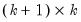

The name= option stores the results in a  matrix, where

is the number of endogenous variables in the VAR. In the first

rows, the
i-th row,
j-th column contains the Wald statistic for the joint significance of lags of the
i-th endogenous variable in the
j-th equation (note that the entries in the main diagonal are not reported in the table view). The degrees of freedom of the Wald statistics is the number of lags included in the VAR.
In the last row, the j-th column contains the Wald statistic for the joint significance of all lagged endogenous variables (excluding lags of the dependent variable) in the
j-th equation. The degrees of freedom of the Wald statistics in the last row is

times the number of lags included in the VAR.
See “Diagnostic Views” for a discussion of other VAR diagnostics.